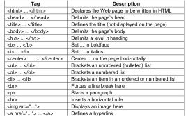
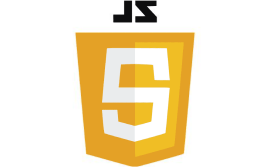

Present

程式碼分享
歡迎來到我的程式碼分享網頁！我是一位專業的程式開發人員，致力於分享我的知識和技巧。這裡有關於網頁開發、程式碼分享內容、不同程式語言的文章和教學。

網頁簡介
在這裡，你可以找到關於建立和設計現代網頁的最新資訊。從前端到後端，從 HTML、CSS、JavaScript 到後端語言，我將分享我的寶貴經驗和技巧，幫助您創造出令人驚艷的用戶體驗。
程式碼分享內容
前端開發
學習如何建構現代網頁，使用 HTML、CSS 和JavaScript 創建美觀和互動的用戶介面。
後端開發
深入了解後端開發，使用流行的後端語言和框架，建立強大的網絡應用和服務。
資料庫管理
探索資料庫技術，學習如何有效地組織和管理數據，為您的應用程序提供強大的儲存解決方案。
程式語言


HTML & CSS
HTML 和 CSS
是建立網頁的基礎。學習它們，您將能夠創建精美且具有吸引力的網頁。
JavaScript
JavaScript 是一種強大的網頁編程語言，讓您的網頁互動和動態。
Python
Python
是一種簡單易學的語言，廣泛應用於後端開發、數據科學和人工智慧等領域。
關於我
我是一位擁有多年經驗的專業開發人員，熱愛網頁開發並致力於將最佳實踐分享給其他開發人員。無論您是初學者還是有經驗的開發人員，我都歡迎您和我一起學習和成長。
立即開始學習